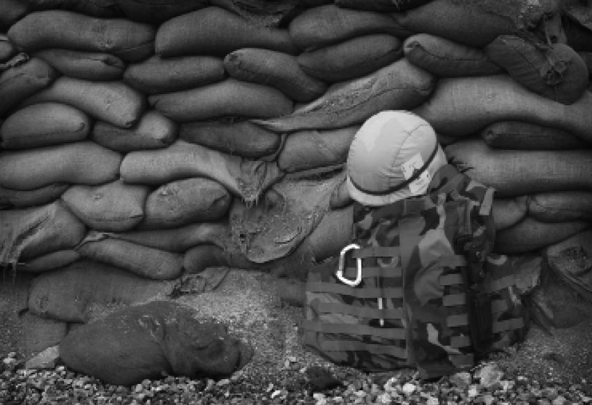

Agent Orange
A covert menance of the Vietnam War
Anh Duong
Spring 2008

More than 30 years have passed since the withdrawal of American troops
from the battlefields of Vietnam, yet the war’s repercussions are still
felt today. As part of its military stratagems, the United States left
behind a devastating legacy: Agent Orange, a biochemical weapon named
for the orange barrels in which it was stored. Between 1965 and 1970,
more than 12 million gallons of this herbicide were sprayed across
Vietnam, resulting in the destruction of many civilian rice paddies and
a rich ecosystem that once sustained tigers, elephants, rubber trees,
and other vital flora and fauna. Today, the poison still claws at the
thin topsoil, invading the food chain, the human body, and finally
spreading across the ocean to catch up with those who unleashed it 30
years ago.
Agent Orange, an herbicide primarily composed of two
hydrocarbons that react to produce tetrachlorodibenzodioxin (TCDD), is
one of the most toxic dioxins known to man. According to Linda
Birnbaum, Chief of the Environmental Protection Agency’s (EPA)
Experimental Toxicology Division, “[TCDD] is the most toxic, perturbing
lots of different systems in the body.” In the 2006 report, Exposure
and Human Health Reassessment of TCDD and Related Compounds, the EPA
states: “TCDD acts via an intracellular protein...whose effects appear
likely to reflect alterations in gene expression.” Many important
regulatory proteins come into contact with the protein-bonded TCDD, and
as a result of faulty transcription, cause other proteins to become
altered and damaged, producing mutated genetic sequences. In a
controlled environment, this has resulted in embryonic death and
infertility in lab mice. In the aftermath of the Vietnam War, this
phenomenon manifests itself in populations where children are born with
physical deformities, mental retardation, and stunted growth. TCDD has
taken an enormous toll on human health, serving as a hard-learned
lesson of implementing biochemical warfare.
Like many biochemical weapons, Agent Orange was
intended to destroy enemy food sources, expose guerilla fighters in
jungles, and namely, to incapacitate enemy soldiers. However, the
effects of Agent Orange were instead felt most acutely by the civilians
who were first exposed to the poison and lived off the contaminated
land. Harvests of crops yielded contaminated grasses and plants, which
were then consumed by livestock. Consequently, TCDD entered the food
chain by accumulating in the fat tissues of animals. Human consumption
of these animals transferred TCDD to humans, extending the poison’s
reach. Arnold Schecter, MD, and John Constable, MD, of Harvard
University have conducted research on TCDD in Vietnam for over two
decades, and have found elevated levels of the dioxin in areas hard hit
by the herbicide. In the January 2007 issue of Science, author Richard
Stone attests in his article “Agent Orange’s Bitter Harvest” that
sufficient evidence exists to assert Agent Orange’s role in causing
chronic lymphocytic leukemia, Hodgkin’s disease, and chloracne – among
several other rare illnesses. Moreover, the Vietnamese are not the only
ones suffering from the side effects.
On this side of the Pacific Ocean, the US is finally
beginning to feel the repercussions of its actions from over 30 years
ago. In the US-Vietnam Bilateral Trade Agreement of 2001, the US
extended the status of Most Favored Nation (MFN), also known as Normal
Trade Relations (NTR), to Vietnam. This signi! cantly reduced US
tariffs on Vietnamese imports. Since this agreement, thousands of
pounds of Vietnamese products have entered the American market, most
notably seafood products like fish and shrimp. In 2003, Schecter found
that more than 20 types of imported Vietnamese fish were contaminated
with dangerous levels of TCDD, especially catfish, a consumer favorite.
Also, many Vietnam War veterans have reported chronic pain and suffered
from TCDD poisoning. Their future appears even bleaker since the US
Department of Defense discontinued funding in 2006 for research on the
health of US veterans exposed to Agent Orange. With time, these
consequences only become more severe and difficult to amend.
The past few years of world history, a host of new
biological and chemical weapons of war have been born. In early 2002,
the threat of anthrax swept through America, transforming mailboxes
into sources of fear far and wide. UN-supported commissions have
indicted many governments, Iran and Iraq included, for funding research
laboratories devoted to developing new antibiotic-resistant strains of
anthrax and research in mycotoxins and other gases harmful to humans.
The US is not free from blame either. In 2002, the private bio warfare
research organization, the Sunshine Project, discovered that the US
patented a new type of grenade that releases biological and chemical
agents specifically aimed at riot and crowd control, and that the
Pentagon increased funding toward developments of various chemical
gases that would act as incapacitants during battle. As with Agent
Orange in Vietnam, the negative side effects of these materials are
harmful to humans even after several generations of use due to
biomagnification, and the cleanup is difficult if not impossible.
Recent talks between the current US administration
and the Vietnamese government have breached the surface of the joint
Agent Orange issue, but further discussion has reached a stalemate.
Each day, more children, families, and veterans are bearing the brunt
of Agent Orange’s toxic effects. If the development of biochemical
weapons continues to escalate, the atrocities committed in Vietnam will
become repeated history.
About the Author
Anh Duong is a second-year intended Public Health major and dreams of opening her own bakery.